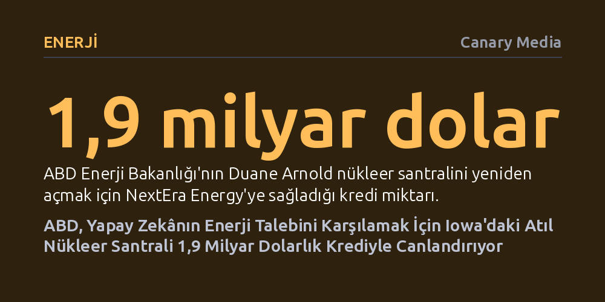

ENERJI · Canary Media · 2026-09-09
ABD Enerji Bakanlığı, veri merkezlerinin artan elektrik ihtiyacını karşılamak amacıyla Iowa'da altı yıldır kapalı olan Duane Arnold nükleer santraline 1,9 milyar dolarlık kredi sağladı. Tesisin Google ile yapılan anlaşmayla 2029 başında yeniden üretime geçmesi hedefleniyor.
Yapay zekâ ve bulut bilişimin devasa elektrik ihtiyacı, ekonomik gerekçelerle kapatılan nükleer santrallerin kamu teşvikleri ve teknoloji devlerinin ortaklığıyla tarihte ilk kez yeniden canlandırılmasını tetikliyor.

ABD Enerji Bakanlığı, Iowa eyaletindeki Duane Arnold Enerji Merkezi'nin yeniden faaliyete geçirilmesini finanse etmek amacıyla NextEra Energy şirketine 1,9 milyar dolara kadar kredi sağlandığını açıkladı. Altı yıl önce yüksek onarım maliyetleri ve ekonomik gerekçelerle kapatılan 615 megavatlık tesisin, gerekli yenileme ve onayların ardından 2029 yılı başında yeniden elektrik üretmesi hedefleniyor.
Bu hamle tekil bir vaka değil; ABD hükümetinin kapatılmış nükleer tesisleri yeniden canlandırma politikasının üçüncü büyük adımını oluşturuyor. Enerji Bakanlığı daha önce Pennsylvania'daki Crane santrali için 1 milyar dolar, Michigan'daki Palisades tesisi için ise 1,52 milyar dolarlık kredi paketlerini onaylamıştı. On yıllar boyunca hizmet veren bu reaktörlerin tümü, son yıllarda ucuz kaya gazı ve maliyeti hızla düşen yenilenebilir enerjiyle rekabet edemeyerek faaliyetlerine son vermişti.
Atıl durumdaki nükleer tesislerin yeniden canlandırılmasının arkasında, ülke genelinde hızla tırmanan elektrik talebi yatıyor. Bu talep patlamasının merkezinde ise yapay zekâ modellerinin eğitimi ve veri merkezlerinin kesintisiz güç ihtiyacı bulunuyor. Güneş ve rüzgâr gibi kesintili kaynakların aksine günün 24 saati sıfır karbonlu baz yük sağlayan nükleer enerji, teknoloji devlerinin gözünde vazgeçilmez bir çözüme dönüşmüş durumda.
Bu doğrultuda NextEra Energy, Duane Arnold santralinden üretilecek elektrik için geçen sonbaharda Google ile 25 yıllık dev bir tedarik anlaşması imzaladı. Anlaşma, Google'ın eyaletteki bulut bilişim ve yapay zekâ altyapısını temiz enerjiyle beslemeyi amaçlıyor. Tesisin tam kapasiteye ulaşmasıyla yaklaşık 500 bin hanenin elektrik ihtiyacına denk bir üretim sağlanması ve inşaat sürecinde 1.500, operasyon sürecinde ise 400'den fazla istihdam yaratılması bekleniyor.
Daha önce tamamen kapatılmış bir nükleer santralin yeniden üretime geçirilmesi, ABD nükleer enerji tarihinde bugüne kadar hiç gerçekleşmemiş bir ilki temsil ediyor. Bu alanda öncü konumdaki Holtec International'ın Michigan'daki 800 megavatlık Palisades santrali, türünün ilk örneği olmanın getirdiği teknik zorluklar nedeniyle başlangıçtaki 2026 başı hedefini kaçırsa da ana rekonstrüksiyon çalışmalarını tamamlayarak reaktör kazanına yakıt yükleme aşamasına geçti.
Palisades'in Mart 2027'deki yasal tamamlanma süresine kadar şebekeye bağlanabilmesi, Iowa'daki Duane Arnold ve benzeri tesislerin önünü açacak kritik bir sınav niteliği taşıyor. Ancak NextEra'nın da üretimi başlatabilmesi için öncelikle ABD Nükleer Düzenleme Komisyonu'ndan (NRC) kapsamlı güvenlik ve lisans onaylarını alması gerekiyor.
Nükleer santrallerin yeniden açılmasına yönelik kredi adımları Biden döneminde atılmış olsa da mevcut Trump yönetimi diğer temiz enerji fonlarını keserken nükleere verilen desteği daha da hızlandırdı. Bakanlık bünyesindeki birim 'Enerji Hakimiyeti Finansman Ofisi' adını alırken, 10 yeni büyük ölçekli reaktörün inşasını ve nükleer tedarik zincirini desteklemek için 17,5 milyar dolarlık kapsamlı bir kredi programı duyuruldu.
Artan elektrik talebi ve şebeke güvenliği ihtiyacı, eyalet düzeyindeki siyasi tabuları da yıkıyor. Geçmişte nükleer enerjiye moratoryum koymuş olan Demokrat yönetimindeki eyaletler bile, rüzgâr ve güneşi tamamlayacak güvenilir ve düşük emisyonlu baz yük gücü sağlamak amacıyla kısıtlamalarını tek tek geri çekiyor.